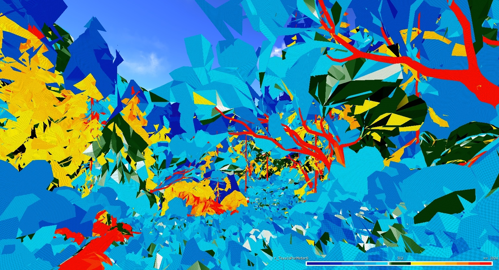
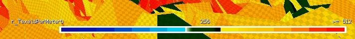
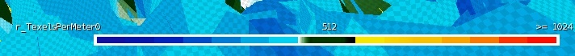
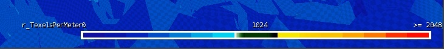
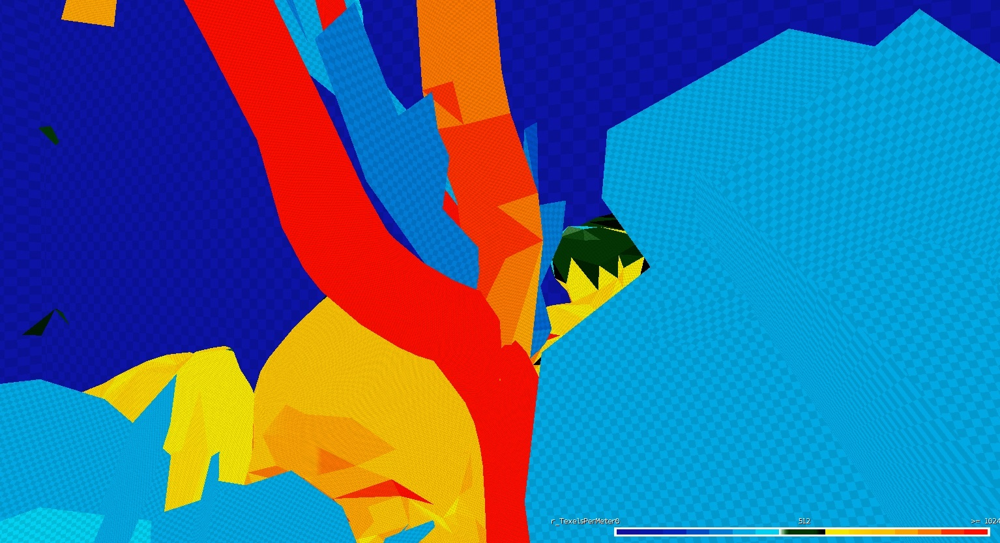
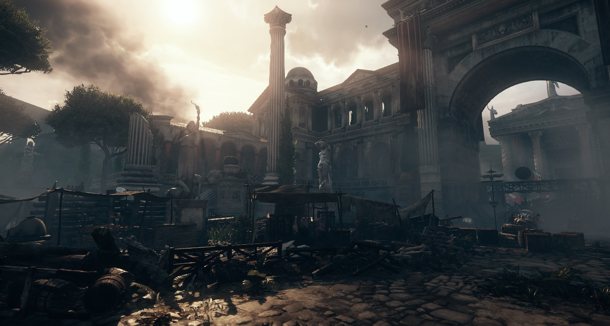
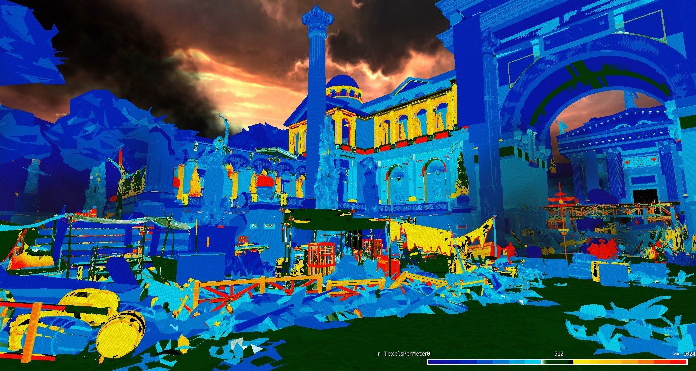
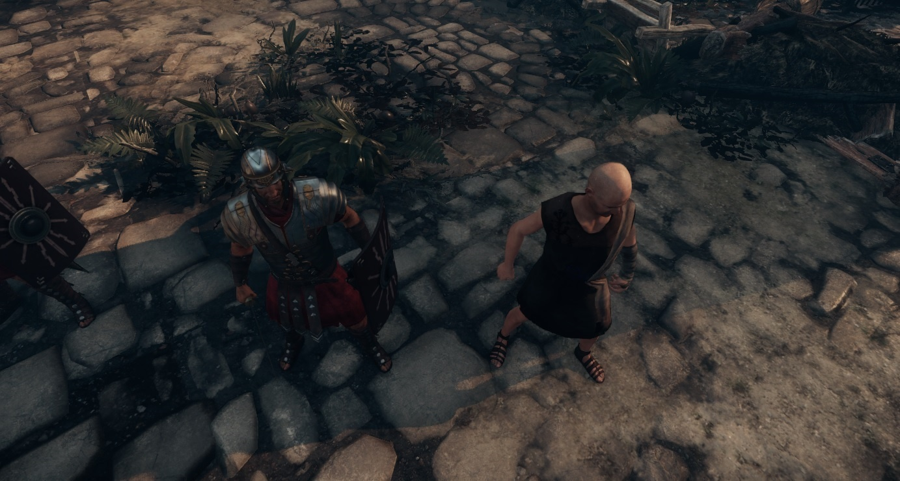
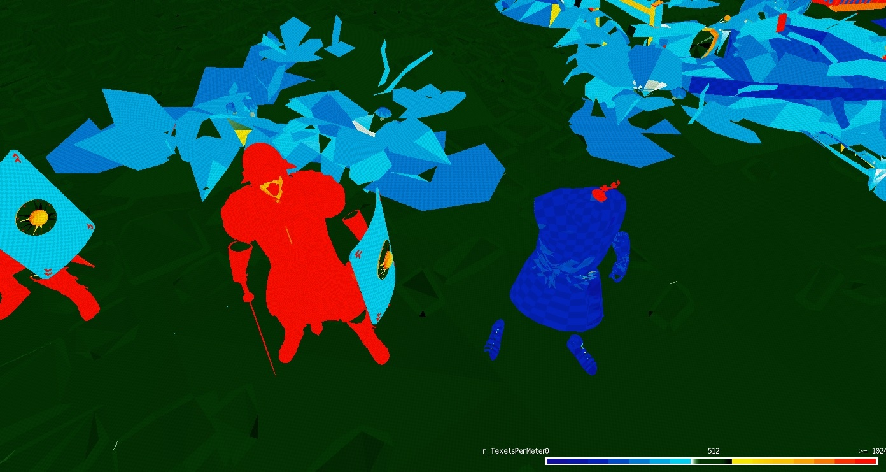
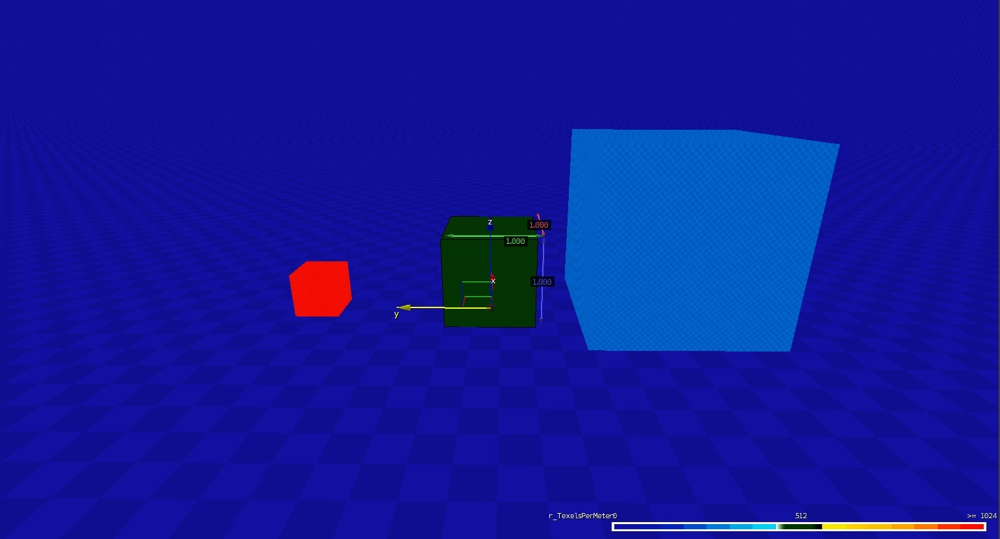

Обзор
Эти инструменты помогут вам настроить UV ресурсов, которые вы создаете для CRYENGINE.
В окне просмотра отображается определенное представление отладки, которое заменяет все текстуры для всех ресурсов и кодирует их цветом в соответствии с количеством текселей на метр, который они покрывают (Плотность текселей).
Это связано с тем, как вы размещаете свои карты UV в инструменте DCC (Max/Maya) и как они представлены в игре. В Crytek мы стремимся, чтобы большая часть наших ресурсов умещалась в районе 512 текселей на метр (как это было в наших играх Crysis 3 и Ryse). Если все активы подчиняются этому правилу, они будут иметь единообразный вид по всем направлениям.
Включение режима отладки
CVar, который включает режим просмотра отладки: r_TexelsPerMeter
Как упоминалось ранее, нашим целевым диапазоном является 512, и с этого момента используется значение 512, если не указано иное. Чтобы включить режим отладки в консоли введите;
r_TexelsPerMeter = 512
Вы можете добавить любое число в эту CVar, но используемое число будет «целевым» диапазоном. Следовательно, мы используем 512.
Чтобы облегчить доступ к этому режиму отладки, он включен в панель инструментов режимов просмотра. Три предопределенных варианта: 256, 512 и 1024 сопоставлены с кнопками на панели инструментов.
Чтобы добавить панель инструментов, щелкните правой кнопкой мыши пустое место в UI, чтобы открыть меню панели инструментов, и выберите ViewModes.
Просмотр с использованием предопределенного варианта 512. Диапазон = 512.

Как это работает
Следите за полосой «диапазона», расположенной в правом нижнем углу экрана.
Какое бы значение вы ни выбрали в CVar, например. r_TexelsPerMeter = 512, тогда 512 будет в центре шкалы диапазона.
256: Крайний левый = ноль, крайний правый = 512.

512: Крайний левый = ноль, крайний правый = 1024.

1024: Крайний левый = ноль, крайний правый = 2048.

Поскольку в качестве значения мы выбрали 512 (средний снимок экрана выше), активы, соответствующие этому требованию, будут затенены зеленым цветом.
- Все, что имеет плотность текселей ниже 512, будет иметь оттенок светло-голубого -> темно-синего.
- Все, что имеет плотность текселей выше 512, будет иметь оттенок желтого -> оранжевого -> красного.
- Все, что зеленое, в самый раз
Чтобы визуализировать цвета и отображение UV, также применяется текстура шахматной доски - она также масштабируется в зависимости от растяжения отображения, и чем выше плотность, тем плотнее становится шахматная доска. Обратите внимание на шахматную доску высоких частот в красной области и шахматную доску низких частот в темно-синей области.

Не все активы созданы равными
Фоновые активы, такие как отдаленные скалы, леса, здания и т. д., то есть активы, до которых игрок никогда не доберется (но которые являются объектами, которые он может видеть на расстоянии), не стоят того, чтобы тратить на них много текселей.
Причины почему;
- Вы не можете подойти близко к активу, чтобы проверить качество текстур/материалов.
- Это пустая трата ресурсов
С другой стороны, активы героев (главные персонажи A*, активы, связанные с кат-сценами, транспортные средства и т. д.), т. е. активы, которые обычно находятся близко и на виду, являются областями, где плотность текселей модели (моделей) должна быть увеличена.
Примеры сцен из Ryse;
Мир: Чем дальше задняя геометрия от игровой зоны, тем меньше требование плотности текселей = (темно-синий). Это показано на скриншотах ниже зданиями и деревьями. Однако римский стандарт (он был отнесен к важным активам) имеет высокую плотность текселей и окрашен в красный цвет. Некоторые тканевые активы и бочки имеют цвет от желтого до оранжевого, они расположены близко к игровой зоне и поэтому требуют большей детализации и, следовательно, имеют более высокую плотность текселей.


Персонажи: Бюджет Текселя, потраченный на римского солдата против обычного гражданского лица. Обратите внимание, что для щита не требовалось столько деталей, как для римских доспехов.


Масштабирование
Обычно художник создает объект в точном масштабе, в котором объект должен быть в игровом мире. Однако для вариаций внутри сцен, например, с камнями, деревьями и т. д., Инструмент масштабирования можно использовать для внесения небольших изменений в объект — это немного разбивает сцену.
Пример:

В центре скриншота выше находится куб размером 1х1х1 м. Куб имеет правильную настройку карты UV, т. е. использует 512 текселей на метр, и поэтому отображается зеленым цветом.
- Куб слева — это тот же самый объект (дублированный), поэтому он имеет тот же макет/настройку UV. Однако его размер был уменьшен вдвое (с помощью инструмента «Масштаб») — это приводит к удвоению плотности текселей.
- Куб справа — это тот же самый объект (дублированный), поэтому он имеет тот же макет/настройку UV. В этом случае масштаб увеличен на 2, поэтому плотность текселей теперь уменьшена вдвое.
Это может вызвать проблемы, когда объекты слишком сильно уменьшаются. В этом случае у вас очень детализированная текстура, которая изо всех сил пытается правильно отобразиться, но на экране недостаточно пикселей для ее разрешения. Следовательно, могут возникнуть проблемы со сглаживанием и другие артефакты.
Или:
Если объект был увеличен слишком сильно, то он будет иметь настолько низкую плотность текселей, что он будет выглядеть как плохо созданная текстура (или с низким разрешением), а не как то, что было предназначено для первоначальной цели этого объекта. (Шкала 1).
Зачем давать мне 3 кнопки (256, 512 и 1024), если желаемая настройка — 512?
Кнопка 1024 поможет вам изучить ваши активы «Героя».
Например, если у вашего главного героя плотность текселей больше или равна 1024, то все будет отображаться красным цветом. Более того, если вы переборщили и дали божественной бороде «Героя» столько деталей, что плотность текселей равна 2048 (теоретически), тогда вам понадобится метод, позволяющий различать плотности текселей 1024 и 2048.
Следовательно, установка r_TexelsPerMeter до 1024, все поверхности, нанесенные на карту с плотностью текселей 1024, будут показаны зеленым цветом, а в данном случае легендарная борода будет выделена красным, поскольку ее плотность текселей >1024.
Точно так же кнопка 256 предназначена для нацеливания на платформу нижнего уровня, где нет чистой мощности, чтобы расталкивать все пиксели. Следовательно, вы можете использовать одно и то же представление отладки для определения этого диапазона детализации. Кроме того, это помогает исследовать фоновые (не столь важные) ресурсы: если диапазон уменьшить до 256, то у вас будет более широкий диапазон цветов для исследования.